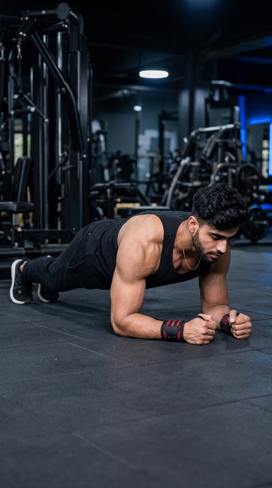

Primary Muscle
Rectus Abdominis
Build Total Core Strength and Stability
The Plank is one of the most effective isometric exercises for developing core strength, stability, and muscular endurance. By maintaining a straight body position while supporting your weight on your forearms and toes, the Plank strengthens the rectus abdominis, transverse abdominis, obliques, lower back, shoulders, and glutes. Whether your goal is improving posture, enhancing athletic performance, or building a stronger core, the Plank is an essential exercise suitable for all fitness levels.

Rectus Abdominis
Body Weight
Beginner
Isometric
Discover which muscles power the Plank and how the supporting muscles work together to improve core stability, posture, spinal alignment, and full-body strength for better athletic performance and everyday movement.
Maintains Trunk Stability and Prevents Excessive Spinal Extension Throughout the Exercise
Acts as the Deep Core Stabilizer to Support the Spine and Maintain Intra-Abdominal Pressure
Stabilize the Torso and Resist Rotation While Keeping the Body Aligned
Work Together to Maintain a Straight Body Position and Improve Overall Stability
Discover how the Plank strengthens your entire core, improves posture and spinal stability, enhances balance, increases muscular endurance, and builds a stronger foundation for everyday activities and athletic performance.
The Plank strengthens the entire core, including the rectus abdominis, transverse abdominis, and obliques, creating a stronger and more stable midsection.
Strengthening the muscles that support your spine helps improve posture, balance, and overall body alignment during daily activities.
A stable core improves force transfer, movement efficiency, and performance during lifting, running, jumping, and sports.
Developing core stability reduces unnecessary stress on the lumbar spine and helps lower the risk of lower-back discomfort during exercise.
Holding the Plank for longer durations develops endurance in the core, shoulders, glutes, and lower back, improving overall functional fitness.
Mastering the Plank prepares you for more advanced core exercises such as Side Planks, Ab Wheel Rollouts, Hanging Leg Raises, and other challenging stability movements.
Follow these step-by-step instructions to perform the Plank with proper body alignment, core engagement, and controlled breathing to maximize stability while protecting your lower back and improving full-body strength.
Place your forearms on the floor with your elbows directly under your shoulders. Extend your legs behind you and balance on your toes.
Keep your forearms parallel and press firmly into the floor for better stability.
Tighten your abdominal muscles, squeeze your glutes, and maintain a neutral spine before lifting fully into the Plank position.
Imagine pulling your belly button toward your spine to create maximum core tension.
Keep your head, shoulders, hips, knees, and heels aligned in one straight line while avoiding sagging or lifting your hips.
Think about creating a straight line from your shoulders to your heels.
Hold the position while breathing steadily and maintaining full-body tension throughout the exercise.
Avoid holding your breath because controlled breathing helps maintain stability.
When your form begins to break down, slowly lower your knees to the floor, rest briefly, and repeat for the desired number of sets.
Always prioritize perfect form over holding the Plank for a longer time.
Avoid these common technique mistakes to maximize core activation, improve spinal stability, and perform the Plank safely and effectively.
Allowing your hips to drop places excessive stress on the lower back and reduces core engagement.
Brace your core, squeeze your glutes, and maintain a straight line from your shoulders to your heels.
Lifting your hips too high decreases abdominal activation and turns the Plank into an easier position.
Keep your hips level with your shoulders and heels while maintaining a neutral spine.
Breath-holding increases unnecessary tension and makes it more difficult to maintain proper form during the exercise.
Breathe slowly and consistently while keeping your core fully engaged throughout the hold.
An incorrect head position can strain the neck and disrupt proper spinal alignment.
Keep your neck neutral by looking down at the floor a few inches in front of your hands.
Apply these expert coaching cues to improve your Plank technique, maximize core activation, maintain proper body alignment, and build greater stability and muscular endurance with every hold.
Maintain alignment from your head to your heels by keeping your hips level and your spine neutral throughout the exercise.
A straight body creates the strongest plank.
Tighten your abdominal muscles before starting and maintain that tension for the entire duration of the hold.
A tight core protects your lower back.
Contract your glutes during the Plank to improve hip stability and help maintain a neutral pelvic position.
Strong glutes help stabilize the entire body.
End the set when your posture begins to break down instead of holding the position with poor form.
Perfect form always beats a longer hold.
Progress from learning proper body alignment to developing exceptional core strength, endurance, and full-body stability through increasingly challenging Plank variations.
Learn correct body alignment by holding a forearm plank with a neutral spine and maintaining full-body tension for short durations.
Body alignment, core bracing, shoulder stability, and breathing.
Gradually increase the amount of time you can hold a perfect Plank while maintaining proper posture and continuous core engagement.
Muscular endurance, posture, breathing, and technique consistency.
Challenge your core further by performing Plank Shoulder Taps, Plank Up-Downs, and other controlled dynamic Plank variations.
Anti-rotation strength, shoulder stability, coordination, and core control.
Progress to advanced exercises such as Side Planks, RKC Planks, Single-Arm Planks, and Weighted Planks to maximize total core strength and stability.
Maximum core strength, muscular endurance, stability, and long-term progression.
Find answers to common questions about Plank technique, muscles worked, proper form, training duration, and how to strengthen your core safely and effectively.
The Plank primarily targets the rectus abdominis, transverse abdominis, and obliques while also engaging the shoulders, glutes, lower back, and leg muscles to stabilize the entire body.
Beginners can start with 20–30 seconds, while more experienced individuals can hold the position for 45–90 seconds with perfect form.
Yes. Mild shaking is common as your muscles fatigue. However, stop the exercise if you can no longer maintain proper body alignment.
Yes. The Plank is one of the best beginner-friendly core exercises because it builds strength and stability without requiring complex movement patterns.
Perform 2–4 sets while holding each Plank for an appropriate duration based on your fitness level. Focus on maintaining excellent technique.
Perform Planks two to four times per week as part of a balanced core training program, allowing adequate recovery between challenging sessions.
Explore other core exercises that complement the Plank and help you build stronger abdominal muscles, improve core stability, and develop greater trunk strength through both static and dynamic movements.


Continue strengthening your core with detailed exercise guides covering proper technique, muscles worked, common mistakes, expert coaching tips, and progression strategies designed for every fitness level.